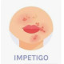

Impetigo
Rx
1.Oint Tetracycline N=1 q6h
Or Oint Mupirocin 2% N=1 q6h
+ Susp Cephalexin 250mg N=30 w/4 q6h
2.Soap N=1 PRN
نکته: درموارد خفیف پماد موپیروسین کفایت میکند.
نکته: درموارد شدید و گسترده از نوع خوراکی هم استفاده کنید.
نکته: شستشو و برداشته شدن کراست ها در بیماران انجام شود.
نکته: درمان تا 5 روز ادامه دهید.
زر زخم غیر تاولی
1️⃣ کاندیدیازیس جلدی
2️⃣ کریون
3️⃣ درماتوفیتوز التهابی
4️⃣ عفونت درماتوفیتی
DLE 5️⃣ لوپوس
6️⃣ سندرم sweet
زرد زخم تاولی
Bullous pemphigoid reactions 1️⃣
Bullous lupus erythematosus 2️⃣
3️⃣ درماتیت هرپتی فرم
4️⃣ واکنش دارویی
5️⃣ درماتیت آتوپیک و تماسی
6️⃣ سوختگی شیمیایی
4S 7️⃣
Varicella-Zoster Virus (VZV) 8️⃣
Scabies 9️⃣